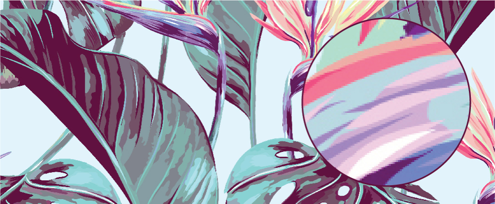

"Red Line"
Mapa de bits
¿Qué es un mapa de bits?
Es un formato de archivo de imagen que representa gráficos en forma de una cuadrícula de píxeles, en la que cada píxel se representa mediante un conjunto de bits. En un mapa de bits, se define un valor de color para cada píxel, lo que permite representar imágenes con gran detalle y precisión.
Los mapas de bits son comúnmente utilizados para imágenes digitales de baja resolución, como íconos, gráficos y logotipos, pero también se pueden utilizar para imágenes de alta resolución, como fotografías. A diferencia de otros formatos de imagen, como JPEG o PNG, los mapas de bits no utilizan compresión con pérdida, lo que significa que la calidad de la imagen no se ve afectada por la compresión.
Los archivos de mapa de bits son compatibles con muchos programas de edición de imágenes, como Photoshop y GIMP, y se pueden guardar en varios formatos de archivo, incluyendo BMP, GIF, JPEG y PNG.
"Características de un Mapa de Bits"
1. Resolución:
La resolución de un mapa de bits se refiere al número de píxeles que se utilizan para representar la imagen. Cuanto mayor sea la resolución, más nítida será la imagen.
2. Profundidad de bits:
La profundidad de bits se refiere al número de bits que se utilizan para representar el color de cada píxel. Un mapa de bits de 8 bits puede representar hasta 256 colores diferentes, mientras que un mapa de bits de 24 bits puede representar más de 16 millones de colores.
3. Tamaño del archivo:
El tamaño del archivo de un mapa de bits depende de su resolución, profundidad de bits y el número de píxeles en la imagen. Los mapas de bits de alta resolución y profundidad de bits pueden generar archivos de gran tamaño.
4. Escalabilidad:
Los mapas de bits no son escalables sin pérdida de calidad. Cuando se escala un mapa de bits, los píxeles se estiran o se comprimen, lo que puede resultar en una pérdida de calidad.
5. Edición:
Los mapas de bits son adecuados para la edición de imágenes porque permiten una manipulación precisa de cada píxel. Sin embargo, los mapas de bits no son adecuados para la edición de imágenes que requieren capas o transparencias.
6. Compatibilidad:
Los mapas de bits son compatibles con la mayoría de los programas de software de imagen y se pueden guardar en una amplia variedad de formatos de archivo.
EJEMPLOS


¿Qué diferencia hay entre una imagen vectorial y un mapa de bits??
Mas contenido...
Mapa de ubicación